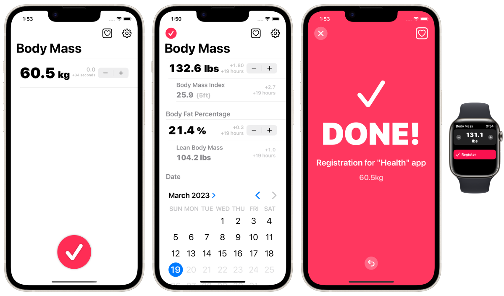

Daftarkan data berat badan Anda di aplikasi Health Care secepat mungkin.



Ini adalah cara tercepat (manual) untuk mendaftarkan data berat badan di aplikasi Apple 'Health Care' yang sudah terpasang di iPhone.
Pengguna yang dituju / kasus penggunaan
Tidak memiliki timbangan pintar.
Mereka mengukur berat badan dan persentase lemak tubuh pada timbangan setiap hari.
Mempertimbangkan untuk mendaftarkan hasil pengukuran secara manual di aplikasi 'Perawatan Kesehatan' segera setelah setiap pengukuran pada timbangan.
Opsi.
BMI dapat secara otomatis dihitung dan didaftarkan pada waktu yang sama.
Persentase lemak tubuh juga dapat didaftarkan pada waktu yang sama.
Massa tubuh tanpa lemak (LBM) dapat secara otomatis dihitung dan didaftarkan pada waktu yang sama.
Unit input dapat diubah dari 100g ke 50g.
Kompatibel dengan Apple Watch.
Fungsi pemberitahuan pengingat.
Kemampuan untuk mengubah tanggal dan waktu pendaftaran.
Opsi untuk menyembunyikan spanduk iklan. (Pembelian dalam aplikasi)
Satuan: kg, lbs, st
Lainnya.
Peluncuran aplikasi Apple Health Care dengan sekali ketuk dari dalam aplikasi.
Pendaftaran dapat dibatalkan segera setelah pendaftaran.
Konsep.
Orang sering mengukur berat badan dan persentase lemak tubuh mereka setiap hari dengan menggunakan timbangan. Banyak pengguna iPhone mendaftarkan data berat badan dan lemak tubuh mereka pada aplikasi 'Health Care'. Solusi terbaik adalah menggunakan timbangan pintar yang bekerja dengan aplikasi Health Care dan secara otomatis menyimpan pengukuran, tetapi ini bisa jadi mahal dan tidak dapat diakses. Meskipun dimungkinkan untuk mendaftarkan data secara manual pada aplikasi Health Care, sayangnya aplikasi Health Care tidak dirancang untuk pendaftaran pengukuran secara manual secara rutin. Oleh karena itu, memasukkan data secara manual yang terjadi secara terus menerus setiap hari, seperti pengukuran berat badan, dapat menjadi pengalaman yang sangat menyita waktu dan membuat stres. Aplikasi ini dikembangkan untuk mengatasi masalah tersebut.
Aplikasi ini tidak dapat membaca, melihat, atau mengelola data masa lalu di aplikasi 'Perawatan Kesehatan'. Aplikasi ini hanya untuk mendaftarkan data di aplikasi 'Health Care'. Silakan periksa data yang terdaftar di aplikasi 'Perawatan Kesehatan'.
Gratis
Sembunyikan iklan (160 yen)